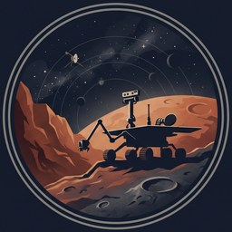

Silent Robots
Abandonados pero no olvidados
La NASA ha dejado robots en la Luna, en Marte y en el espacio profundo. Algunos ya no funcionan, otros siguen viajando. Aquí cuentan su historia.
Elige una categoría y empieza a explorar.
📚 Historias
Aquí los robots cuentan su historia. Lee, mira y escucha cómo fueron sus misiones, desde la Luna hasta el espacio profundo.
📝 Aprende y practica
Lee textos cortos y pon a prueba lo que entendiste con cuestionarios, frases por completar y un quiz.
🎮 Juegos
Juegos para repasar lo aprendido. Cada vez que entras salen palabras y piezas distintas, y puedes mezclarlas con un botón.
Arriba puedes cambiar entre modo claro y modo oscuro, elegir el idioma, activar la lectura en voz alta, subir el contraste y agrandar la letra. Datos tomados de la NASA (NSSDCA y science.nasa.gov). Proyecto educativo del equipo Constelación Bolillo Estelar; no es un sitio oficial de la NASA.